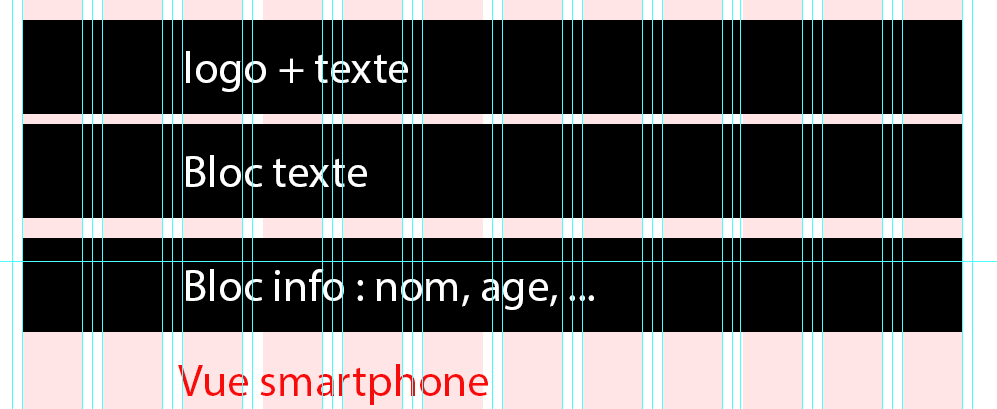
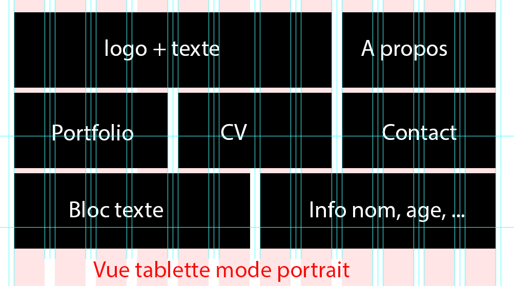

Home
Vue Mobile

- Pas de transition
- A vous de trouver un menu "mobile" à intéger (tips : faire en dernier)
- Le logo sera positionné à côté du texte
- Le slider image disparait
Vue Tablette orientation portrait

- la vue paysage ne change par par rapport à la vue bureau
- les blocs menus apparaissent
- les transitions sont fonctionnelles
- le slider n'apparait pas
Vue bureau - voir vidéo
- le slider apparait
- les transitions sont fonctionnelles